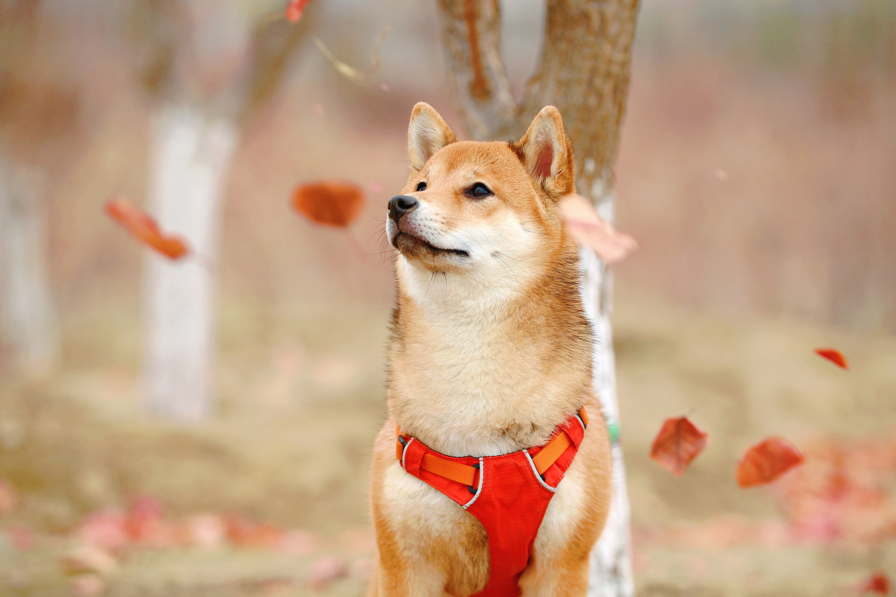
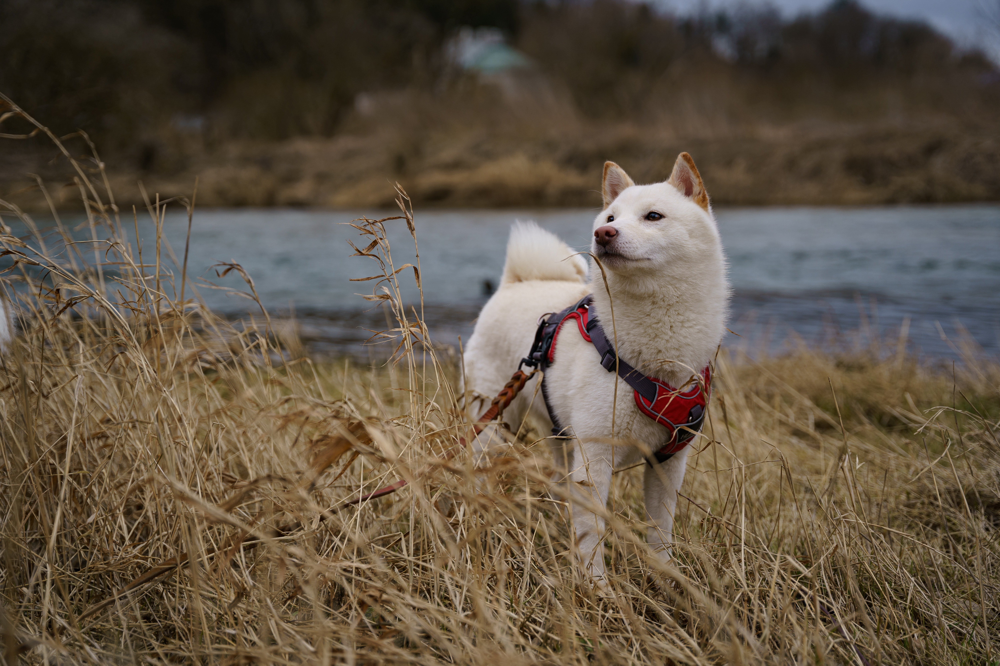
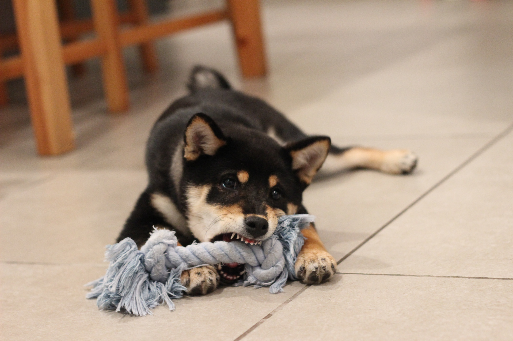

Shiba Guide
 @GuideMyShiba
@GuideMyShiba Join Groups
Join Groups Share some memes
Share some memes Training Videos
Training Videos

Shiba Inu Guide
All you need to know to become a parent.
Interesting Facts
How to Train Shibas
Behavioral Patterns
Types of Shibas
Sign up to our newsletter to receive useful tips on training your shiba!

Intelligence
Shiba Inus are intelligent dogs and can excel in various canine activities and sports. However, their independent nature means they may not always be the easiest to train.

Shiba Scream
Shiba Inus are known for their distinctive and loud vocalization, often called the "Shiba scream." They can be quite vocal when they're excited or unhappy.

Cat-Like Traits
Shiba Inus have a reputation for being somewhat cat-like. They are known for their cleanliness, agility, and occasionally aloof demeanor.

Compact Size
Shiba Inus are a small to medium-sized breed, typically weighing between 17 to 23 pounds (7.7 to 10.4 kilograms).